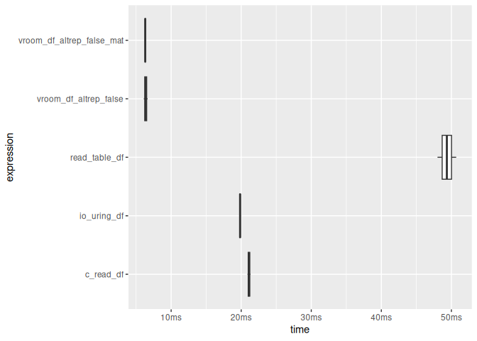

Builds TinyCC Cli and Library For C Scripting in R
Abstract
Rtinycc is an R interface to TinyCC, providing both CLI access and a libtcc-backed in-memory compiler. It includes an FFI inspired by Bun’s FFI for binding C symbols with predictable type conversions and pointer utilities. The package works on unix-alikes and Windows and focuses on embedding TinyCC and enabling JIT-compiled bindings directly from R. Combined with treesitter.c, which provides C header parsers, it can be used to rapidly generate declarative bindings.
How it works
When you call tcc_compile(), Rtinycc generates C wrapper functions whose signature follows the .Call convention (SEXP in, SEXP out). These wrappers convert R types to C, call the target function, and convert the result back. TCC compiles them in-memory – no shared library is written to disk and no R_init_* registration is needed.
After tcc_relocate(), wrapper pointers are retrieved via tcc_get_symbol(), which internally calls RC_libtcc_get_symbol(). That function converts TCC’s raw void* into a DL_FUNC wrapped with R_MakeExternalPtrFn (tagged "native symbol"). The symbol pointer retains its owning tcc_state, so the relocated code remains alive while the symbol is reachable. On the R side, make_callable() creates a closure that passes this external pointer to .Call (aliased as .RtinyccCall to keep R CMD check happy). Non-memory states instead produce one-shot artifacts with tcc_output_file() and cannot expose callable symbol pointers.
The design follows CFFI’s API-mode pattern: instead of computing struct layouts and calling conventions in R (ABI-mode, like Python’s ctypes), the generated C code lets TCC handle sizeof, offsetof, and argument passing. Rtinycc never replicates platform-specific layout rules. The wrappers can also link against external shared libraries whose symbols TCC resolves at relocation time. For background on how this compares to a libffi approach, see the RSimpleFFI README.
On macOS the configure script strips -flat_namespace from TCC’s build to avoid BUS ERROR issues. Without it, TCC cannot resolve host symbols (e.g. RC_free_finalizer) through the dynamic linker. Rtinycc works around this with RC_libtcc_add_host_symbols(), which registers package-internal C functions via tcc_add_symbol() before relocation. Any new C function referenced by generated TCC code must be added there.
On Windows, the configure.win script generates a UCRT-backed msvcrt.def so TinyCC resolves CRT symbols against ucrtbase.dll (R 4.2+ uses UCRT).
Ownership semantics are explicit. Pointers from tcc_malloc() are tagged rtinycc_owned and can be released with tcc_free() (or by their R finalizer). Generated struct constructors use a struct-specific tag (struct_<name>) and host-allocated storage with RC_owned_native_finalizer; free them with struct_<name>_free(), not tcc_free(). Pointers from tcc_data_ptr() are tagged rtinycc_borrowed and are never freed by Rtinycc. Array returns are copied into a fresh R vector; set free = TRUE only when the C function returns a malloc-owned buffer.
Installation
install.packages(
'Rtinycc',
repos = c('https://sounkou-bioinfo.r-universe.dev',
'https://cloud.r-project.org')
)Usage
CLI
The CLI interface compiles C source files to standalone executables using the bundled TinyCC toolchain.
library(Rtinycc)
src <- system.file("c_examples", "forty_two.c", package = "Rtinycc")
exe <- tempfile()
tcc_run_cli(c(
"-B", tcc_prefix(),
paste0("-I", tcc_include_paths()),
paste0("-L", tcc_lib_paths()),
src, "-o", exe
))
#> [1] 0
Sys.chmod(exe, mode = "0755")
system2(exe, stdout = TRUE)
#> [1] "42"For in-memory workflows, prefer libtcc instead.
In-memory compilation with libtcc
We can compile and call C functions entirely in memory. This is the simplest path for quick JIT compilation.
state <- tcc_state(output = "memory")
tcc_compile_string(state, "int forty_two(){ return 42; }")
#> [1] 0
tcc_relocate(state)
#> [1] 0
tcc_call_symbol(state, "forty_two", return = "int")
#> [1] 42For low-level pointer-style calls, tcc_call_symbol() can also use an R .C()-like convention: call a void C routine with pointers to copied argument buffers, then return a list of the modified values.
state <- tcc_state(output = "memory")
tcc_compile_string(state, "void add_one(int *x) { x[0] += 1; }")
#> [1] 0
tcc_relocate(state)
#> [1] 0
tcc_call_symbol(state, "add_one", x = as.integer(41))
#> $x
#> [1] 42The lower-level API gives full control over include paths, libraries, and the R C API. Using #define _Complex as a workaround for TCC’s lack of complex type support, we can link against R’s headers and call into libR.
state <- tcc_state(output = "memory")
tcc_add_include_path(state, R.home("include"))
#> [1] 0
tcc_add_library_path(state, R.home("lib"))
#> [1] 0
code <- '
#define _Complex
#include <R.h>
#include <Rinternals.h>
double call_r_sqrt(void) {
SEXP fn = PROTECT(Rf_findFun(Rf_install("sqrt"), R_BaseEnv));
SEXP val = PROTECT(Rf_ScalarReal(16.0));
SEXP call = PROTECT(Rf_lang2(fn, val));
SEXP out = PROTECT(Rf_eval(call, R_GlobalEnv));
double res = REAL(out)[0];
UNPROTECT(4);
return res;
}
'
tcc_compile_string(state, code)
#> [1] 0
tcc_relocate(state)
#> [1] 0
tcc_call_symbol(state, "call_r_sqrt", return = "double")
#> [1] 4Pointer utilities
Rtinycc ships a set of typed memory access functions similar to what the ctypesio package offers, but designed around our FFI pointer model. Every scalar C type has a corresponding tcc_read_* / tcc_write_* pair that operates at a byte offset into any external pointer, so you can walk structs, arrays, and output parameters without writing C helpers.
ptr <- tcc_cstring("hello")
tcc_read_cstring(ptr)
#> [1] "hello"
tcc_read_bytes(ptr, 5)
#> [1] 68 65 6c 6c 6f
tcc_ptr_addr(ptr, hex = TRUE)
#> [1] "0x571fafe85c40"
tcc_ptr_is_null(ptr)
#> [1] FALSE
tcc_free(ptr)
#> NULLTyped reads and writes cover the full scalar range (i8/u8, i16/u16, i32/u32, i64/u64, f32/f64) plus pointer dereferencing via tcc_read_ptr / tcc_write_ptr. All operations use a byte offset and memcpy internally for alignment safety.
buf <- tcc_malloc(32)
tcc_write_i32(buf, 0L, 42L)
tcc_write_f64(buf, 8L, pi)
tcc_read_i32(buf, offset = 0L)
#> [1] 42
tcc_read_f64(buf, offset = 8L)
#> [1] 3.141593
tcc_free(buf)
#> NULLPointer-to-pointer workflows are supported for C APIs that return values through output parameters.
ptr_ref <- tcc_malloc(.Machine$sizeof.pointer %||% 8L)
target <- tcc_malloc(8)
tcc_ptr_set(ptr_ref, target)
#> <pointer: 0x571fad64bd70>
tcc_data_ptr(ptr_ref)
#> <pointer: 0x571fafda7d10>
tcc_ptr_set(ptr_ref, tcc_null_ptr())
#> <pointer: 0x571fad64bd70>
tcc_free(target)
#> NULL
tcc_free(ptr_ref)
#> NULLDeclarative FFI
A declarative interface inspired by Bun’s FFI sits on top of the lower-level API. We define types explicitly and Rtinycc generates the binding code, compiling it in memory with TCC.
Type system
The FFI exposes a small set of type mappings between R and C. Conversions are explicit and predictable so callers know when data is shared versus copied.
The scalar type names are C-facing, but the R-side carriers are not all one-to-one with those C widths:
-
i8,i16,i32,u8, andu16are mediated through R integer scalars -
u32,i64,u64,f32, andf64are mediated through R numeric (double) coercion and boxing -
booluses R logical -
cstringuses an R character scalar
This means u32 is routed through double to preserve the full unsigned 32-bit range, and i64 / u64 are only exact up to 2^53 on the R side.
Array arguments pass R vectors to C with zero copy: raw maps to uint8_t*, integer_array to int32_t*, numeric_array to double*.
Pointer types include ptr (opaque external pointer), sexp (pass a SEXP directly), and callback signatures like callback:double(double).
Variadic functions are supported in two forms: typed prefix tails (varargs) and bounded dynamic tails (varargs_types + varargs_min/varargs_max). Prefix mode is the cheaper runtime path because dispatch is by tail arity only; bounded dynamic mode adds per-call scalar type inference to select a compatible wrapper. For hot loops, prefer fixed arity first, then prefix variadics with a tight maximum tail size.
Array returns use returns = list(type = "integer_array", length_arg = 2, free = TRUE) to copy the result into a new R vector. The length_arg is the 1-based index of the C argument that carries the array length. Set free = TRUE when the C function returns a malloc-owned buffer.
Simple functions
ffi <- tcc_ffi() |>
tcc_source("
int add(int a, int b) { return a + b; }
") |>
tcc_bind(add = list(args = list("i32", "i32"), returns = "i32")) |>
tcc_compile()
ffi$add(5L, 3L)
#> [1] 8Variadic calls (e.g. Rprintf style)
Rtinycc supports two ways to bind variadic tails. The legacy approach uses varargs as a typed prefix tail, while the bounded dynamic approach uses varargs_types together with varargs_min and varargs_max. In the bounded mode, wrappers are generated across the allowed arity and type combinations, and runtime dispatch selects the matching wrapper from the scalar tail values provided at call time.
ffi_var <- tcc_ffi() |>
tcc_header("#include <R_ext/Print.h>") |>
tcc_source('
#include <stdarg.h>
int sum_fmt(int n, ...) {
va_list ap;
va_start(ap, n);
int s = 0;
for (int i = 0; i < n; i++) s += va_arg(ap, int);
va_end(ap);
Rprintf("sum_fmt(%d) = %d\\n", n, s);
return s;
}
') |>
tcc_bind(
Rprintf = list(
args = list("cstring"),
variadic = TRUE,
varargs_types = list("i32"),
varargs_min = 0L,
varargs_max = 4L,
returns = "void"
),
sum_fmt = list(
args = list("i32"),
variadic = TRUE,
varargs_types = list("i32"),
varargs_min = 0L,
varargs_max = 4L,
returns = "i32"
)
) |>
tcc_compile()
ffi_var$Rprintf("Rprintf via bind: %d + %d = %d\n", 2L, 3L, 5L)
#> Rprintf via bind: 2 + 3 = 5
#> NULL
ffi_var$sum_fmt(0L)
#> sum_fmt(0) = 0
#> [1] 0
ffi_var$sum_fmt(2L, 10L, 20L)
#> sum_fmt(2) = 30
#> [1] 30
ffi_var$sum_fmt(4L, 1L, 2L, 3L, 4L)
#> sum_fmt(4) = 10
#> [1] 10Linking external libraries
We can bind directly to symbols in shared libraries. Here we link against libm.
math <- tcc_ffi() |>
tcc_library("m") |>
tcc_bind(
sqrt = list(args = list("f64"), returns = "f64"),
sin = list(args = list("f64"), returns = "f64"),
floor = list(args = list("f64"), returns = "f64")
) |>
tcc_compile()
math$sqrt(16.0)
#> [1] 4
math$sin(pi / 2)
#> [1] 1
math$floor(3.7)
#> [1] 3CUDA through NVRTC on a remote GPU
TinyCC compiles the host adapter, not the CUDA kernel. The adapter links to the CUDA Driver API and NVRTC; NVRTC compiles CUDA C to PTX, and the driver loads and launches that PTX. A persistent mirai daemon on the GPU rig holds the Rtinycc state, compiled host adapter, and CUDA configuration across the steps below.
Set RTINYCC_RUN_SSH_DEMOS=true while rendering to launch the rig session and execute the example. Ordinary CRAN and CI renders show the code without opening an SSH connection.
First launch one persistent daemon through mirai’s SSH tunnel, load Rtinycc in that remote R process, and inspect the remote host.
library(mirai)
daemons(
n = 1L,
url = local_url(tcp = TRUE),
remote = ssh_config(
"ssh://sounkoutoure@localhost:2222",
tunnel = TRUE
),
.compute = "gpu"
)
everywhere(library(Rtinycc), .compute = "gpu")
gpu_session <- mirai(
list(
host = Sys.info()[["nodename"]],
pid = Sys.getpid(),
rtinycc = as.character(packageVersion("Rtinycc")),
device = trimws(system2(
"/usr/lib/wsl/lib/nvidia-smi",
c("--query-gpu=name", "--format=csv,noheader"),
stdout = TRUE
)[[1L]])
),
.compute = "gpu"
)
as.data.frame(gpu_session[], check.names = FALSE)
#> host pid rtinycc device
#> 1 SMT 228142 0.1.12 NVIDIA GeForce RTX 5050 Laptop GPUThe long step is collapsed. It runs inside the existing daemon with everywhere(): detect the CUDA architecture, compile the host adapter with Rtinycc, link the CUDA Driver and NVRTC libraries, then retain the compiled FFI object in the daemon’s global environment.
Show the remote Rtinycc, NVRTC, and CUDA compilation step
cuda_setup <- everywhere(
{
# This opt-in demonstration is run on an NVIDIA Linux/WSL host. Override the
# paths and architecture when CUDA is installed elsewhere.
cuda_path <- Sys.getenv(
"RTINYCC_CUDA_DRIVER",
"/usr/lib/wsl/lib/libcuda.so.1"
)
nvrtc_path <- Sys.getenv(
"RTINYCC_NVRTC",
file.path(Sys.getenv("CUDA_HOME", "/usr/local/cuda"), "lib64", "libnvrtc.so")
)
stopifnot(file.exists(cuda_path), file.exists(nvrtc_path))
cuda_arch <- Sys.getenv("RTINYCC_CUDA_ARCH")
if (!nzchar(cuda_arch)) {
nvidia_smi <- Sys.getenv(
"RTINYCC_NVIDIA_SMI",
"/usr/lib/wsl/lib/nvidia-smi"
)
compute_capability <- trimws(system2(
nvidia_smi,
c("--query-gpu=compute_cap", "--format=csv,noheader"),
stdout = TRUE
)[[1L]])
cuda_arch <- paste0("compute_", gsub("[^0-9]", "", compute_capability))
}
stopifnot(grepl("^compute_[0-9]+$", cuda_arch))
code <- '
#include <stdlib.h>
#include <stdio.h>
#include <string.h>
typedef int CUresult;
typedef int CUdevice;
typedef unsigned long long CUdeviceptr;
typedef struct CUctx_st *CUcontext;
typedef struct CUmod_st *CUmodule;
typedef struct CUfunc_st *CUfunction;
typedef struct CUstream_st *CUstream;
typedef int nvrtcResult;
typedef struct _nvrtcProgram *nvrtcProgram;
extern CUresult cuInit(unsigned int flags);
extern CUresult cuDeviceGet(CUdevice *device, int ordinal);
extern CUresult cuCtxCreate_v2(CUcontext *ctx, unsigned int flags,
CUdevice device);
extern CUresult cuCtxDestroy_v2(CUcontext ctx);
extern CUresult cuMemAlloc_v2(CUdeviceptr *ptr, size_t bytes);
extern CUresult cuMemFree_v2(CUdeviceptr ptr);
extern CUresult cuMemcpyHtoD_v2(CUdeviceptr dst, const void *src,
size_t bytes);
extern CUresult cuMemcpyDtoH_v2(void *dst, CUdeviceptr src, size_t bytes);
extern CUresult cuModuleLoadData(CUmodule *module, const void *image);
extern CUresult cuModuleUnload(CUmodule module);
extern CUresult cuModuleGetFunction(CUfunction *function, CUmodule module,
const char *name);
extern CUresult cuLaunchKernel(CUfunction function,
unsigned int grid_x,
unsigned int grid_y,
unsigned int grid_z,
unsigned int block_x,
unsigned int block_y,
unsigned int block_z,
unsigned int shared_mem_bytes,
CUstream stream,
void **kernel_params,
void **extra);
extern CUresult cuCtxSynchronize(void);
extern nvrtcResult nvrtcCreateProgram(nvrtcProgram *program,
const char *source,
const char *name,
int n_headers,
const char * const *headers,
const char * const *include_names);
extern nvrtcResult nvrtcCompileProgram(nvrtcProgram program,
int n_options,
const char * const *options);
extern nvrtcResult nvrtcGetPTXSize(nvrtcProgram program, size_t *size);
extern nvrtcResult nvrtcGetPTX(nvrtcProgram program, char *ptx);
extern nvrtcResult nvrtcGetProgramLogSize(nvrtcProgram program,
size_t *size);
extern nvrtcResult nvrtcGetProgramLog(nvrtcProgram program, char *log);
extern nvrtcResult nvrtcDestroyProgram(nvrtcProgram *program);
static char rt_cuda_error[8192];
static void rt_cuda_set_error(const char *stage, int code) {
snprintf(rt_cuda_error, sizeof(rt_cuda_error), "%s failed: %d", stage, code);
}
char *rt_cuda_last_error(void) {
return rt_cuda_error;
}
static void rt_cuda_set_nvrtc_log(nvrtcProgram program, int code) {
char *log;
size_t copy_size;
size_t size = 0;
snprintf(rt_cuda_error, sizeof(rt_cuda_error),
"nvrtcCompileProgram failed: %d", code);
if (nvrtcGetProgramLogSize(program, &size) != 0 || size <= 1)
return;
log = malloc(size);
if (!log)
return;
if (nvrtcGetProgramLog(program, log) != 0) {
free(log);
rt_cuda_set_error("nvrtcGetProgramLog", code);
return;
}
copy_size = size - 1;
if (copy_size >= sizeof(rt_cuda_error))
copy_size = sizeof(rt_cuda_error) - 1;
memcpy(rt_cuda_error, log, copy_size);
rt_cuda_error[copy_size] = 0;
free(log);
}
int rt_cuda_vec_add(double *x, double *y, double *out, int n) {
static const char *kernel_source =
"extern \\"C\\" __global__ void vec_add(const double *x, "
"const double *y, double *out, int n) {"
" int i = (int)(blockIdx.x * blockDim.x + threadIdx.x);"
" if (i < n) out[i] = x[i] + y[i];"
"}";
const char *options[] = {
"--gpu-architecture=@CUDA_ARCH@",
"--std=c++11"
};
nvrtcProgram program = 0;
CUcontext context = 0;
CUmodule module = 0;
CUfunction function = 0;
CUdevice device = 0;
CUdeviceptr device_x = 0;
CUdeviceptr device_y = 0;
CUdeviceptr device_out = 0;
char *ptx = 0;
size_t ptx_size = 0;
size_t bytes;
void *params[4];
unsigned int blocks;
int rc;
int status = -1;
rt_cuda_error[0] = 0;
if (n < 0) {
strcpy(rt_cuda_error, "negative vector length");
return -1;
}
if (n == 0)
return 0;
bytes = (size_t)n * sizeof(double);
rc = nvrtcCreateProgram(&program, kernel_source, "vec_add.cu",
0, 0, 0);
if (rc != 0) {
rt_cuda_set_error("nvrtcCreateProgram", rc);
goto cleanup;
}
rc = nvrtcCompileProgram(program, 2, options);
if (rc != 0) {
rt_cuda_set_nvrtc_log(program, rc);
goto cleanup;
}
rc = nvrtcGetPTXSize(program, &ptx_size);
if (rc != 0) {
rt_cuda_set_error("nvrtcGetPTXSize", rc);
goto cleanup;
}
ptx = malloc(ptx_size);
if (!ptx) {
strcpy(rt_cuda_error, "PTX allocation failed");
goto cleanup;
}
rc = nvrtcGetPTX(program, ptx);
if (rc != 0) {
rt_cuda_set_error("nvrtcGetPTX", rc);
goto cleanup;
}
rc = cuInit(0);
if (rc != 0) {
rt_cuda_set_error("cuInit", rc);
goto cleanup;
}
rc = cuDeviceGet(&device, 0);
if (rc != 0) {
rt_cuda_set_error("cuDeviceGet", rc);
goto cleanup;
}
rc = cuCtxCreate_v2(&context, 0, device);
if (rc != 0) {
rt_cuda_set_error("cuCtxCreate_v2", rc);
goto cleanup;
}
rc = cuModuleLoadData(&module, ptx);
if (rc != 0) {
rt_cuda_set_error("cuModuleLoadData", rc);
goto cleanup;
}
rc = cuModuleGetFunction(&function, module, "vec_add");
if (rc != 0) {
rt_cuda_set_error("cuModuleGetFunction", rc);
goto cleanup;
}
rc = cuMemAlloc_v2(&device_x, bytes);
if (rc != 0) {
rt_cuda_set_error("cuMemAlloc(x)", rc);
goto cleanup;
}
rc = cuMemAlloc_v2(&device_y, bytes);
if (rc != 0) {
rt_cuda_set_error("cuMemAlloc(y)", rc);
goto cleanup;
}
rc = cuMemAlloc_v2(&device_out, bytes);
if (rc != 0) {
rt_cuda_set_error("cuMemAlloc(out)", rc);
goto cleanup;
}
rc = cuMemcpyHtoD_v2(device_x, x, bytes);
if (rc != 0) {
rt_cuda_set_error("cuMemcpyHtoD(x)", rc);
goto cleanup;
}
rc = cuMemcpyHtoD_v2(device_y, y, bytes);
if (rc != 0) {
rt_cuda_set_error("cuMemcpyHtoD(y)", rc);
goto cleanup;
}
params[0] = &device_x;
params[1] = &device_y;
params[2] = &device_out;
params[3] = &n;
blocks = ((unsigned int)n + 255U) / 256U;
rc = cuLaunchKernel(function, blocks, 1, 1, 256, 1, 1,
0, 0, params, 0);
if (rc != 0) {
rt_cuda_set_error("cuLaunchKernel", rc);
goto cleanup;
}
rc = cuCtxSynchronize();
if (rc != 0) {
rt_cuda_set_error("cuCtxSynchronize", rc);
goto cleanup;
}
rc = cuMemcpyDtoH_v2(out, device_out, bytes);
if (rc != 0) {
rt_cuda_set_error("cuMemcpyDtoH", rc);
goto cleanup;
}
status = 0;
cleanup:
if (device_out)
cuMemFree_v2(device_out);
if (device_y)
cuMemFree_v2(device_y);
if (device_x)
cuMemFree_v2(device_x);
if (module)
cuModuleUnload(module);
if (context)
cuCtxDestroy_v2(context);
free(ptx);
if (program)
nvrtcDestroyProgram(&program);
return status;
}
'
code <- sub("@CUDA_ARCH@", cuda_arch, code, fixed = TRUE)
cuda_compiled <- tcc_ffi() |>
tcc_source(code) |>
tcc_library(cuda_path) |>
tcc_library(nvrtc_path) |>
tcc_bind(
rt_cuda_vec_add = list(
args = list("numeric_array", "numeric_array", "numeric_array", "i32"),
returns = "i32"
),
rt_cuda_last_error = list(args = list(), returns = "cstring")
) |>
tcc_compile()
assign("cuda", cuda_compiled, envir = globalenv())
assign("cuda_arch", cuda_arch, envir = globalenv())
invisible(TRUE)
},
.compute = "gpu"
)
invisible(cuda_setup)A second mirai call sees the state retained by the same daemon.
cuda_ready <- mirai(
list(
host = Sys.info()[["nodename"]],
architecture = cuda_arch,
ffi_class = class(cuda)[[1L]],
bindings = paste(c("rt_cuda_vec_add", "rt_cuda_last_error"), collapse = ", ")
),
.compute = "gpu"
)
as.data.frame(cuda_ready[], check.names = FALSE)
#> host architecture ffi_class bindings
#> 1 SMT compute_120 tcc_compiled rt_cuda_vec_add, rt_cuda_last_errorNow submit the actual vector addition to that daemon. This call uses the already-retained Rtinycc FFI object; it does not resend or parse an R script.
cuda_job <- mirai(
{
n <- as.integer(Sys.getenv("RTINYCC_CUDA_N", "1000000"))
stopifnot(length(n) == 1L, !is.na(n), n > 0L)
set.seed(1)
x <- runif(n)
y <- runif(n)
out <- numeric(n)
timing <- system.time({
rc <- cuda$rt_cuda_vec_add(x, y, out, n)
})
if (rc != 0L) {
stop("CUDA vector add failed: ", cuda$rt_cuda_last_error())
}
expected <- x + y
max_error <- max(abs(out - expected))
result <- list(
host = Sys.info()[["nodename"]],
rtinycc_version = as.character(packageVersion("Rtinycc")),
device = trimws(system2(
Sys.getenv("RTINYCC_NVIDIA_SMI", "/usr/lib/wsl/lib/nvidia-smi"),
c("--query-gpu=name", "--format=csv,noheader"),
stdout = TRUE
)[[1L]]),
architecture = cuda_arch,
n = n,
status = rc,
elapsed_seconds_including_nvrtc = unname(timing[["elapsed"]]),
max_error = max_error,
first_values = head(out)
)
stopifnot(max_error == 0)
invisible(result)
},
.compute = "gpu"
)
cuda_result <- cuda_job[]
stopifnot(
is.list(cuda_result),
identical(cuda_result$status, 0L),
identical(cuda_result$max_error, 0)
)
data.frame(
host = cuda_result$host,
rtinycc = cuda_result$rtinycc_version,
device = cuda_result$device,
architecture = cuda_result$architecture,
n = cuda_result$n,
elapsed_seconds = cuda_result$elapsed_seconds_including_nvrtc,
max_error = cuda_result$max_error,
check.names = FALSE
)
#> host rtinycc device architecture n
#> 1 SMT 0.1.12 NVIDIA GeForce RTX 5050 Laptop GPU compute_120 1000000
#> elapsed_seconds max_error
#> 1 0.283 0Finally release the retained TCC state and stop the remote daemon.
everywhere(
{
rm(list = intersect(c("cuda", "cuda_arch"), ls(globalenv())),
envir = globalenv())
gc()
},
.compute = "gpu"
)
daemons(0, .compute = "gpu")The displayed result is returned by the remote R process. Timing includes NVRTC compilation, CUDA context creation, device allocation, transfers, launch, and synchronization; this is a correctness demonstration rather than a steady-state kernel benchmark.
Compiler options
Use tcc_options() to pass raw TinyCC options in the high-level FFI pipeline. For low-level states, use tcc_set_options() directly.
ffi_opt_off <- tcc_ffi() |>
tcc_options("-O0") |>
tcc_source('
int opt_macro() {
#ifdef __OPTIMIZE__
return 1;
#else
return 0;
#endif
}
') |>
tcc_bind(opt_macro = list(args = list(), returns = "i32")) |>
tcc_compile()
ffi_opt_on <- tcc_ffi() |>
tcc_options(c("-Wall", "-O2")) |>
tcc_source('
int opt_macro() {
#ifdef __OPTIMIZE__
return 1;
#else
return 0;
#endif
}
') |>
tcc_bind(opt_macro = list(args = list(), returns = "i32")) |>
tcc_compile()
ffi_opt_off$opt_macro()
#> [1] 0
ffi_opt_on$opt_macro()
#> [1] 1Working with arrays
R vectors are passed to C with zero copy. Mutations in C are visible in R.
ffi <- tcc_ffi() |>
tcc_source("
#include <stdlib.h>
#include <string.h>
int64_t sum_array(int32_t* arr, int32_t n) {
int64_t s = 0;
for (int i = 0; i < n; i++) s += arr[i];
return s;
}
void bump_first(int32_t* arr) { arr[0] += 10; }
int32_t* dup_array(int32_t* arr, int32_t n) {
int32_t* out = malloc(sizeof(int32_t) * n);
memcpy(out, arr, sizeof(int32_t) * n);
return out;
}
") |>
tcc_bind(
sum_array = list(args = list("integer_array", "i32"), returns = "i64"),
bump_first = list(args = list("integer_array"), returns = "void"),
dup_array = list(
args = list("integer_array", "i32"),
returns = list(type = "integer_array", length_arg = 2, free = TRUE)
)
) |>
tcc_compile()
x <- as.integer(1:100) # to avoid ALTREP
.Internal(inspect(x))
#> @571fb2f3d1d0 13 INTSXP g0c0 [REF(65535)] 1 : 100 (compact)
ffi$sum_array(x, length(x))
#> [1] 5050
# Zero-copy: C mutation reflects in R
ffi$bump_first(x)
#> NULL
x[1]
#> [1] 11
# Array return: copied into a new R vector, C buffer freed
y <- ffi$dup_array(x, length(x))
y[1]
#> [1] 11
.Internal(inspect(x))
#> @571fb2f3d1d0 13 INTSXP g0c0 [REF(65535)] 11 : 110 (expanded)Advanced FFI features
Structs and unions
Complex C types are supported declaratively. Use tcc_struct() to generate allocation and accessor helpers. Free instances when done.
ffi <- tcc_ffi() |>
tcc_source('
#include <math.h>
struct point { double x; double y; };
double distance(struct point* a, struct point* b) {
double dx = a->x - b->x, dy = a->y - b->y;
return sqrt(dx * dx + dy * dy);
}
') |>
tcc_library("m") |>
tcc_struct("point", accessors = c(x = "f64", y = "f64")) |>
tcc_bind(distance = list(args = list("ptr", "ptr"), returns = "f64")) |>
tcc_compile()
p1 <- ffi$struct_point_new()
ffi$struct_point_set_x(p1, 0.0)
#> <pointer: 0x571fae5288c0>
ffi$struct_point_set_y(p1, 0.0)
#> <pointer: 0x571fae5288c0>
p2 <- ffi$struct_point_new()
ffi$struct_point_set_x(p2, 3.0)
#> <pointer: 0x571fb2fcc090>
ffi$struct_point_set_y(p2, 4.0)
#> <pointer: 0x571fb2fcc090>
ffi$distance(p1, p2)
#> [1] 5
ffi$struct_point_free(p1)
#> NULL
ffi$struct_point_free(p2)
#> NULLEnums
Enums are exposed as helper functions that return integer constants.
ffi <- tcc_ffi() |>
tcc_source("enum color { RED = 0, GREEN = 1, BLUE = 2 };") |>
tcc_enum("color", constants = c("RED", "GREEN", "BLUE")) |>
tcc_compile()
ffi$enum_color_RED()
#> [1] 0
ffi$enum_color_BLUE()
#> [1] 2Bitfields
Bitfields are handled by TCC. Accessors read and write them like normal fields.
ffi <- tcc_ffi() |>
tcc_source("
struct flags {
unsigned int active : 1;
unsigned int level : 4;
};
") |>
tcc_struct("flags", accessors = c(active = "u8", level = "u8")) |>
tcc_compile()
s <- ffi$struct_flags_new()
ffi$struct_flags_set_active(s, 1L)
#> <pointer: 0x571fb2a20260>
ffi$struct_flags_set_level(s, 9L)
#> <pointer: 0x571fb2a20260>
ffi$struct_flags_get_active(s)
#> [1] 1
ffi$struct_flags_get_level(s)
#> [1] 9
ffi$struct_flags_free(s)
#> NULLGlobal getters and setters
C globals can be exposed with explicit getter/setter helpers.
ffi <- tcc_ffi() |>
tcc_source("
int counter = 7;
double pi_approx = 3.14159;
") |>
tcc_global("counter", "i32") |>
tcc_global("pi_approx", "f64") |>
tcc_compile()
ffi$global_counter_get()
#> [1] 7
ffi$global_pi_approx_get()
#> [1] 3.14159
ffi$global_counter_set(42L)
#> [1] 42
ffi$global_counter_get()
#> [1] 42Callbacks
R functions can be registered as C function pointers via tcc_callback() and passed to compiled code. Specify a callback:<signature> argument in tcc_bind() so the trampoline is generated automatically. Call tcc_callback_close() when you want deterministic invalidation and earlier release of the preserved R function. The legacy threadsafe argument is informational; worker dispatch is selected by callback_async:<signature>.
cb <- tcc_callback(function(x) x * x, signature = "double (*)(double)")
code <- '
double apply_fn(double (*fn)(void* ctx, double), void* ctx, double x) {
return fn(ctx, x);
}
'
ffi <- tcc_ffi() |>
tcc_source(code) |>
tcc_bind(
apply_fn = list(
args = list("callback:double(double)", "ptr", "f64"),
returns = "f64"
)
) |>
tcc_compile()
ffi$apply_fn(cb, tcc_callback_ptr(cb), 7.0)
#> [1] 49
tcc_callback_close(cb)Callback errors
If a callback throws an R error, the trampoline catches it, emits a warning, and returns a type-appropriate sentinel instead of unwinding through C. In practice this means NA-like numeric or integer values, NA logical, NULL for cstring, or a null external pointer depending on the declared return type.
cb_err <- tcc_callback(
function(x) stop("boom"),
signature = "double (*)(double)"
)
ffi_err <- tcc_ffi() |>
tcc_source('
double call_cb_err(double (*cb)(void* ctx, double), void* ctx, double x) {
return cb(ctx, x);
}
') |>
tcc_bind(
call_cb_err = list(
args = list("callback:double(double)", "ptr", "f64"),
returns = "f64"
)
) |>
tcc_compile()
warned <- FALSE
res <- withCallingHandlers(
ffi_err$call_cb_err(cb_err, tcc_callback_ptr(cb_err), 1.0),
warning = function(w) {
warned <<- TRUE
invokeRestart("muffleWarning")
}
)
list(warned = warned, result = res)
#> $warned
#> [1] TRUE
#>
#> $result
#> [1] NA
tcc_callback_close(cb_err)Async callbacks
For callback dispatch from worker threads, use callback_async:<signature> in tcc_bind(). The async callback queue is initialized automatically at package load.
When a bound function has any callback_async: argument, the generated wrapper automatically runs your C function on a new thread while draining callbacks on the main R thread. Your C code doesn’t need to know about draining at all — just call the callback as normal and the wrapper handles the rest. Interrupt requests are deferred until the worker has returned and been joined, so native stack contexts cannot escape while still in use.
Void return (fire-and-forget): the callback is enqueued from any thread and executed on the main R thread automatically — on Windows via R’s message pump, on Linux/macOS via R’s event loop addInputHandler.
Non-void return (synchronous): the worker thread blocks until the main R thread executes the callback and returns the real result. Supported return types: integer variants (int, int32_t, i8, i16, u8, u16, u32, i64, u64), floating-point (double, float), bool/logical, and pointer (void*, T*). Wide integer values must remain within R’s exact numeric range (absolute value at most 2^53).
Async scalar and string payloads are copied into queue tasks. Pointer payloads copy only the address: C must keep the pointee alive until the callback has executed. Closing a callback cancels queued work for that callback; registry slot reuse cannot redirect old work to a newly registered callback.
# Fire-and-forget: void callback accumulated from 100 worker threads
hits <- 0L
cb_async <- tcc_callback(
function(x) { hits <<- hits + x; NULL },
signature = "void (*)(int)"
)
code_async <- '
struct task { void (*cb)(void* ctx, int); void* ctx; int value; };
#ifdef _WIN32
#include <windows.h>
static DWORD WINAPI worker(LPVOID data) {
struct task* t = (struct task*) data;
t->cb(t->ctx, t->value);
return 0;
}
int spawn_async(void (*cb)(void* ctx, int), void* ctx, int value) {
if (!cb || !ctx) return -1;
struct task t;
t.cb = cb;
t.ctx = ctx;
t.value = value;
HANDLE th = CreateThread(NULL, 0, worker, &t, 0, NULL);
if (!th) return -2;
WaitForSingleObject(th, INFINITE);
CloseHandle(th);
return 0;
}
#else
#include <pthread.h>
static void* worker(void* data) {
struct task* t = (struct task*) data;
t->cb(t->ctx, t->value);
return NULL;
}
int spawn_async(void (*cb)(void* ctx, int), void* ctx, int value) {
if (!cb || !ctx) return -1;
const int n = 100;
struct task tasks[100];
pthread_t th[100];
for (int i = 0; i < n; i++) {
tasks[i].cb = cb;
tasks[i].ctx = ctx;
tasks[i].value = value;
if (pthread_create(&th[i], NULL, worker, &tasks[i]) != 0) {
for (int j = 0; j < i; j++) pthread_join(th[j], NULL);
return -2;
}
}
for (int i = 0; i < n; i++) pthread_join(th[i], NULL);
return 0;
}
#endif
'
ffi_async <- tcc_ffi() |>
tcc_source(code_async)
if (.Platform$OS.type != "windows") {
ffi_async <- tcc_library(ffi_async, "pthread")
}
ffi_async <- ffi_async |>
tcc_bind(
spawn_async = list(
args = list("callback_async:void(int)", "ptr", "i32"),
returns = "i32"
)
) |>
tcc_compile()
rc <- ffi_async$spawn_async(cb_async, tcc_callback_ptr(cb_async), 2L)
hits
#> [1] 200
tcc_callback_close(cb_async)Non-void return works the same way — the generated wrapper handles the drain loop transparently:
cb_triple <- tcc_callback(
function(x) x * 3L,
signature = "int (*)(int)"
)
# Pure C: the worker calls the sync callback and returns its result.
# No drain logic needed — the generated wrapper handles it.
code_sync <- '
#ifdef _WIN32
#include <windows.h>
struct itask { int (*cb)(void*,int); void* ctx; int in; int out; };
static DWORD WINAPI iworker(LPVOID p) {
struct itask* t = (struct itask*)p;
t->out = t->cb(t->ctx, t->in);
return 0;
}
int run_worker(int (*cb)(void*,int), void* ctx, int x) {
struct itask t;
t.cb = cb; t.ctx = ctx; t.in = x; t.out = -1;
HANDLE th = CreateThread(NULL, 0, iworker, &t, 0, NULL);
if (!th) return -1;
WaitForSingleObject(th, INFINITE);
CloseHandle(th);
return t.out;
}
#else
#include <pthread.h>
struct itask { int (*cb)(void*,int); void* ctx; int in; int out; };
static void* iworker(void* p) {
struct itask* t = (struct itask*)p;
t->out = t->cb(t->ctx, t->in);
return NULL;
}
int run_worker(int (*cb)(void*,int), void* ctx, int x) {
struct itask t;
t.cb = cb; t.ctx = ctx; t.in = x; t.out = -1;
pthread_t th;
if (pthread_create(&th, NULL, iworker, &t) != 0) return -1;
pthread_join(th, NULL);
return t.out;
}
#endif
'
ffi_sync <- tcc_ffi() |>
tcc_source(code_sync)
if (.Platform$OS.type != "windows") {
ffi_sync <- tcc_library(ffi_sync, "pthread")
}
ffi_sync <- ffi_sync |>
tcc_bind(
run_worker = list(args = list("callback_async:int(int)", "ptr", "i32"), returns = "i32")
) |>
tcc_compile()
ffi_sync$run_worker(cb_triple, tcc_callback_ptr(cb_triple), 7L) # 21
#> [1] 21
tcc_callback_close(cb_triple)SQLite: a complete example
This example ties together external library linking, callbacks, and pointer dereferencing. We open an in-memory SQLite database, execute queries, and collect rows through an R callback that reads char** arrays using tcc_read_ptr and tcc_read_cstring.
ptr_size <- .Machine$sizeof.pointer
read_string_array <- function(ptr, n) {
vapply(seq_len(n), function(i) {
tcc_read_cstring(tcc_read_ptr(ptr, (i - 1L) * ptr_size))
}, "")
}
cb <- tcc_callback(
function(argc, argv, cols) {
values <- read_string_array(argv, argc)
names <- read_string_array(cols, argc)
cat(paste(names, values, sep = " = ", collapse = ", "), "\n")
0L
},
signature = "int (*)(int, char **, char **)"
)
sqlite <- tcc_ffi() |>
tcc_header("#include <sqlite3.h>") |>
tcc_library("sqlite3") |>
tcc_source('
void* open_db() {
sqlite3* db = NULL;
sqlite3_open(":memory:", &db);
return db;
}
int close_db(void* db) {
return sqlite3_close((sqlite3*)db);
}
') |>
tcc_bind(
open_db = list(args = list(), returns = "ptr"),
close_db = list(args = list("ptr"), returns = "i32"),
sqlite3_libversion = list(args = list(), returns = "cstring"),
sqlite3_exec = list(
args = list("ptr", "cstring", "callback:int(int, char **, char **)", "ptr", "ptr"),
returns = "i32"
)
) |>
tcc_compile()
sqlite$sqlite3_libversion()
#> [1] "3.45.1"
db <- sqlite$open_db()
sqlite$sqlite3_exec(db, "CREATE TABLE t (id INTEGER, name TEXT);", cb, tcc_callback_ptr(cb), tcc_null_ptr())
#> [1] 0
sqlite$sqlite3_exec(db, "INSERT INTO t VALUES (1, 'hello'), (2, 'world');", cb, tcc_callback_ptr(cb), tcc_null_ptr())
#> [1] 0
sqlite$sqlite3_exec(db, "SELECT * FROM t;", cb, tcc_callback_ptr(cb), tcc_null_ptr())
#> id = 1, name = hello
#> id = 2, name = world
#> [1] 0
sqlite$close_db(db)
#> [1] 0
tcc_callback_close(cb)Stackless C Protothreads: streaming BCF/VCF records with htslib
Rtinycc bundles Adam Dunkels’ Protothreads library, allowing you to JIT-compile cross-platform native iterators that yield back to R. This demo binds htslib using a protothread: R resumes the C reader until the next bcf1_t is ready, then copies the current fields into a regular R list. The C logic never blocks R’s event loop, and R objects are created only after control returns safely to the main R stack.
Important Protothreads Limitations: Because protothreads are stackless (implemented using Duff’s device macro expansions), you must observe a few strict rules in your C code:
-
Local variables are NOT preserved across
PT_YIELDcalls. Store state in your context struct instead. - No nested blocking: You cannot yield from inside a nested C function call.
-
No switch statements: Because Protothreads uses
switchinternally, you cannot useswitchwithin aPT_THREADblock.
The demo uses plain VCF text, opened directly by htslib through the same API as BCF.
source("scripts/demo-streaming-bcf-reader-ffi.R")
run_streaming_bcf_demo()
#> Rtinycc version: 0.1.12
#> Demo: stackless Protothreads + htslib BCF/VCF API streaming reader
#> Note: htslib reads run using Protothreads. Warning: Local C variables are NOT preserved across yields!; R objects are built only after each yield.
#>
#> Input: generated VCF text (opened directly by htslib)
#> Samples: sample1
#>
#> == Streaming records one resume at a time ==
#> record 1: chr1:10 id=rs1 ref=A alt=C qual=50 alleles=[A,C]
#> record 2: chr1:20 id=. ref=G alt=A,T qual=99 alleles=[G,A,T]
#> record 3: chr1:30 id=rs3 ref=TT alt=T qual=. alleles=[TT,T]
#> done_after_collect=TRUEThe full demo source is foldable below.
Click to show the complete scripts/demo-streaming-bcf-reader-ffi.R script
#!/usr/bin/env Rscript
suppressPackageStartupMessages(library(Rtinycc))
say <- function(...) cat(..., "\n", sep = "")
pkg_config_paths <- function(args, prefix) {
out <- tryCatch(
system2("pkg-config", c(args, "htslib"), stdout = TRUE, stderr = FALSE),
error = function(e) character()
)
out <- unlist(strsplit(paste(out, collapse = " "), "[[:space:]]+"))
out <- out[nzchar(out)]
sub(paste0("^", prefix), "", out[startsWith(out, prefix)])
}
build_streaming_bcf_ffi <- function() {
code <- '
#include <rtinycc/pt.h>
#include <stdint.h>
#include <stdlib.h>
#include <string.h>
#include <stdio.h>
#include <math.h>
#include <htslib/hts.h>
#include <htslib/vcf.h>
enum {
BCF_STREAM_ERR = -1,
BCF_STREAM_EOF = 0,
BCF_STREAM_RECORD = 1
};
typedef struct bcf_stream {
struct pt pt;
int yielded;
int started;
int done;
int error;
char err[256];
htsFile *fp;
bcf_hdr_t *hdr;
bcf1_t *rec;
char *alts;
size_t alts_cap;
int ret;
} bcf_stream_t;
static void bcf_stream_set_error(bcf_stream_t *st, const char *msg) {
if (!st) return;
if (!msg) msg = "unknown htslib error";
snprintf(st->err, sizeof(st->err), "%s", msg);
st->error = 1;
}
static int bcf_stream_resume_internal(bcf_stream_t *st) {
PT_BEGIN(&st->pt);
if (!st || !st->fp || !st->hdr || !st->rec) {
if (st) bcf_stream_set_error(st, "stream is not open");
if (st) st->done = 1;
PT_EXIT(&st->pt);
}
for (;;) {
st->ret = bcf_read(st->fp, st->hdr, st->rec);
if (st->ret == 0) {
if (bcf_unpack(st->rec, BCF_UN_STR) < 0) {
bcf_stream_set_error(st, "bcf_unpack() failed");
st->done = 1;
st->yielded = BCF_STREAM_ERR;
PT_EXIT(&st->pt);
}
st->yielded = BCF_STREAM_RECORD;
PT_YIELD(&st->pt);
if (st->error || st->done) PT_EXIT(&st->pt);
} else {
if (st->ret < -1) {
bcf_stream_set_error(st, "bcf_read() failed");
}
st->done = 1;
st->yielded = BCF_STREAM_EOF;
PT_EXIT(&st->pt);
}
}
PT_END(&st->pt);
}
void *bcf_stream_open(const char *path) {
bcf_stream_t *st = (bcf_stream_t *) calloc(1, sizeof(bcf_stream_t));
if (!st) return NULL;
PT_INIT(&st->pt);
if (!path || !path[0]) {
bcf_stream_set_error(st, "path is empty");
st->done = 1;
return st;
}
st->fp = hts_open(path, "r");
if (!st->fp) {
bcf_stream_set_error(st, "hts_open() failed");
st->done = 1;
return st;
}
st->hdr = bcf_hdr_read(st->fp);
if (!st->hdr) {
bcf_stream_set_error(st, "bcf_hdr_read() failed");
st->done = 1;
return st;
}
st->rec = bcf_init();
if (!st->rec) {
bcf_stream_set_error(st, "bcf_init() failed");
st->done = 1;
return st;
}
return st;
}
int bcf_stream_resume(void *ptr) {
bcf_stream_t *st = (bcf_stream_t *) ptr;
if (!st) return BCF_STREAM_ERR;
if (st->error) return BCF_STREAM_ERR;
if (st->done) return BCF_STREAM_EOF;
st->started = 1;
bcf_stream_resume_internal(st);
if (st->error) return BCF_STREAM_ERR;
if (st->done) return BCF_STREAM_EOF;
return st->yielded;
}
int bcf_stream_done(void *ptr) {
bcf_stream_t *st = (bcf_stream_t *) ptr;
return st ? st->done : 1;
}
const char *bcf_stream_error(void *ptr) {
bcf_stream_t *st = (bcf_stream_t *) ptr;
if (!st) return "stream pointer is NULL";
return st->err[0] ? st->err : NULL;
}
const char *bcf_stream_chrom(void *ptr) {
bcf_stream_t *st = (bcf_stream_t *) ptr;
if (!st || !st->hdr || !st->rec) return NULL;
return bcf_seqname(st->hdr, st->rec);
}
int64_t bcf_stream_pos1(void *ptr) {
bcf_stream_t *st = (bcf_stream_t *) ptr;
if (!st || !st->rec) return -1;
return (int64_t) st->rec->pos + 1;
}
int64_t bcf_stream_end1(void *ptr) {
bcf_stream_t *st = (bcf_stream_t *) ptr;
if (!st || !st->rec) return -1;
return (int64_t) st->rec->pos + (int64_t) st->rec->rlen;
}
const char *bcf_stream_id(void *ptr) {
bcf_stream_t *st = (bcf_stream_t *) ptr;
if (!st || !st->rec || !st->rec->d.id || !st->rec->d.id[0]) return ".";
return st->rec->d.id;
}
int bcf_stream_n_allele(void *ptr) {
bcf_stream_t *st = (bcf_stream_t *) ptr;
if (!st || !st->rec) return 0;
return st->rec->n_allele;
}
const char *bcf_stream_allele(void *ptr, int idx) {
bcf_stream_t *st = (bcf_stream_t *) ptr;
if (!st || !st->rec || idx < 0 || idx >= st->rec->n_allele) return NULL;
return st->rec->d.allele[idx];
}
const char *bcf_stream_ref(void *ptr) {
return bcf_stream_allele(ptr, 0);
}
const char *bcf_stream_alt(void *ptr) {
bcf_stream_t *st = (bcf_stream_t *) ptr;
size_t need = 2;
int i;
if (!st || !st->rec) return NULL;
if (st->rec->n_allele <= 1) return ".";
for (i = 1; i < st->rec->n_allele; ++i) {
const char *a = st->rec->d.allele[i] ? st->rec->d.allele[i] : "";
need += strlen(a) + 1;
}
if (need > st->alts_cap) {
char *tmp = (char *) realloc(st->alts, need);
if (!tmp) {
bcf_stream_set_error(st, "failed to allocate ALT buffer");
return NULL;
}
st->alts = tmp;
st->alts_cap = need;
}
st->alts[0] = 0;
for (i = 1; i < st->rec->n_allele; ++i) {
if (i > 1) strcat(st->alts, ",");
strcat(st->alts, st->rec->d.allele[i] ? st->rec->d.allele[i] : "");
}
return st->alts;
}
double bcf_stream_qual(void *ptr) {
bcf_stream_t *st = (bcf_stream_t *) ptr;
if (!st || !st->rec || bcf_float_is_missing(st->rec->qual)) return NAN;
return (double) st->rec->qual;
}
int bcf_stream_nsamples(void *ptr) {
bcf_stream_t *st = (bcf_stream_t *) ptr;
if (!st || !st->hdr) return 0;
return bcf_hdr_nsamples(st->hdr);
}
const char *bcf_stream_sample(void *ptr, int idx) {
bcf_stream_t *st = (bcf_stream_t *) ptr;
if (!st || !st->hdr || idx < 0 || idx >= bcf_hdr_nsamples(st->hdr)) return NULL;
return st->hdr->samples[idx];
}
void bcf_stream_close(void *ptr) {
bcf_stream_t *st = (bcf_stream_t *) ptr;
if (!st) return;
if (st->rec) bcf_destroy(st->rec);
if (st->hdr) bcf_hdr_destroy(st->hdr);
if (st->fp) hts_close(st->fp);
free(st->alts);
memset(st, 0, sizeof(bcf_stream_t));
free(st);
}
'
ffi <- tcc_ffi()
ffi <- tcc_include(ffi, system.file("include", package = "Rtinycc"))
for (path in pkg_config_paths("--cflags-only-I", "-I")) {
ffi <- tcc_include(ffi, path)
}
for (path in pkg_config_paths("--libs-only-L", "-L")) {
ffi <- tcc_library_path(ffi, path)
}
ffi |>
tcc_source(code) |>
tcc_library("hts") |>
tcc_bind(
bcf_stream_open = list(args = list("cstring"), returns = "ptr"),
bcf_stream_resume = list(args = list("ptr"), returns = "i32"),
bcf_stream_done = list(args = list("ptr"), returns = "bool"),
bcf_stream_error = list(args = list("ptr"), returns = "cstring"),
bcf_stream_chrom = list(args = list("ptr"), returns = "cstring"),
bcf_stream_pos1 = list(args = list("ptr"), returns = "i64"),
bcf_stream_end1 = list(args = list("ptr"), returns = "i64"),
bcf_stream_id = list(args = list("ptr"), returns = "cstring"),
bcf_stream_n_allele = list(args = list("ptr"), returns = "i32"),
bcf_stream_allele = list(args = list("ptr", "i32"), returns = "cstring"),
bcf_stream_ref = list(args = list("ptr"), returns = "cstring"),
bcf_stream_alt = list(args = list("ptr"), returns = "cstring"),
bcf_stream_qual = list(args = list("ptr"), returns = "f64"),
bcf_stream_nsamples = list(args = list("ptr"), returns = "i32"),
bcf_stream_sample = list(args = list("ptr", "i32"), returns = "cstring"),
bcf_stream_close = list(args = list("ptr"), returns = "void")
) |>
tcc_compile()
}
new_bcf_reader <- function(path, ffi = build_streaming_bcf_ffi()) {
path <- normalizePath(path, mustWork = TRUE)
ptr <- ffi$bcf_stream_open(path)
if (tcc_ptr_is_null(ptr)) {
stop("failed to allocate BCF stream", call. = FALSE)
}
err <- ffi$bcf_stream_error(ptr)
if (!is.null(err)) {
ffi$bcf_stream_close(ptr)
stop(err, call. = FALSE)
}
reader <- new.env(parent = emptyenv())
reader$ffi <- ffi
reader$ptr <- ptr
reader$closed <- FALSE
class(reader) <- "bcf_stream_reader"
reg.finalizer(reader, function(x) {
if (!isTRUE(x$closed)) {
x$ffi$bcf_stream_close(x$ptr)
x$closed <- TRUE
}
}, onexit = TRUE)
reader
}
close.bcf_stream_reader <- function(con, ...) {
if (!inherits(con, "bcf_stream_reader")) {
stop("expected a bcf_stream_reader", call. = FALSE)
}
if (!isTRUE(con$closed)) {
con$ffi$bcf_stream_close(con$ptr)
con$closed <- TRUE
}
invisible(NULL)
}
bcf_reader_samples <- function(reader) {
stopifnot(inherits(reader, "bcf_stream_reader"), !isTRUE(reader$closed))
n <- reader$ffi$bcf_stream_nsamples(reader$ptr)
if (n <= 0L) return(character())
vapply(seq_len(n) - 1L, function(i) reader$ffi$bcf_stream_sample(reader$ptr, i), "")
}
bcf_reader_next <- function(reader) {
stopifnot(inherits(reader, "bcf_stream_reader"), !isTRUE(reader$closed))
status <- reader$ffi$bcf_stream_resume(reader$ptr)
if (identical(status, 0L)) {
return(NULL)
}
if (identical(status, -1L)) {
err <- reader$ffi$bcf_stream_error(reader$ptr) %||% "BCF stream failed"
stop(err, call. = FALSE)
}
n_allele <- reader$ffi$bcf_stream_n_allele(reader$ptr)
alleles <- if (n_allele > 0L) {
vapply(seq_len(n_allele) - 1L, function(i) {
reader$ffi$bcf_stream_allele(reader$ptr, i) %||% NA_character_
}, "")
} else {
character()
}
list(
chrom = reader$ffi$bcf_stream_chrom(reader$ptr),
pos = reader$ffi$bcf_stream_pos1(reader$ptr),
end = reader$ffi$bcf_stream_end1(reader$ptr),
id = reader$ffi$bcf_stream_id(reader$ptr),
ref = reader$ffi$bcf_stream_ref(reader$ptr),
alt = reader$ffi$bcf_stream_alt(reader$ptr),
qual = reader$ffi$bcf_stream_qual(reader$ptr),
alleles = alleles
)
}
bcf_reader_collect <- function(reader, n = Inf) {
out <- list()
i <- 0L
repeat {
if (i >= n) break
rec <- bcf_reader_next(reader)
if (is.null(rec)) break
i <- i + 1L
out[[i]] <- rec
}
out
}
write_demo_vcf <- function(path) {
lines <- c(
"##fileformat=VCFv4.3",
"##contig=<ID=chr1,length=1000>",
"##FORMAT=<ID=GT,Number=1,Type=String,Description=\"Genotype\">",
"#CHROM\tPOS\tID\tREF\tALT\tQUAL\tFILTER\tINFO\tFORMAT\tsample1",
"chr1\t10\trs1\tA\tC\t50\tPASS\t.\tGT\t0/1",
"chr1\t20\t.\tG\tA,T\t99\tPASS\t.\tGT\t1/2",
"chr1\t30\trs3\tTT\tT\t.\tPASS\t.\tGT\t0/1"
)
writeLines(lines, path)
invisible(path)
}
make_demo_vcf <- function() {
vcf <- tempfile(fileext = ".vcf")
write_demo_vcf(vcf)
vcf
}
run_streaming_bcf_demo <- function() {
say("Rtinycc version: ", as.character(utils::packageVersion("Rtinycc")))
say("Demo: stackless Protothreads + htslib BCF/VCF API streaming reader")
say("Note: htslib reads run using Protothreads. Warning: Local C variables are NOT preserved across yields!; R objects are built only after each yield.")
ffi <- build_streaming_bcf_ffi()
path <- make_demo_vcf()
say("")
say("Input: generated VCF text (opened directly by htslib)")
reader <- new_bcf_reader(path, ffi)
on.exit(close(reader), add = TRUE)
say("Samples: ", paste(bcf_reader_samples(reader), collapse = ", "))
say("")
say("== Streaming records one resume at a time ==")
i <- 0L
repeat {
rec <- bcf_reader_next(reader)
if (is.null(rec)) break
i <- i + 1L
say(
"record ", i, ": ",
rec$chrom, ":", rec$pos,
" id=", rec$id,
" ref=", rec$ref,
" alt=", rec$alt,
" qual=", if (is.nan(rec$qual)) "." else rec$qual,
" alleles=[", paste(rec$alleles, collapse = ","), "]"
)
}
say("done_after_collect=", isTRUE(ffi$bcf_stream_done(reader$ptr)))
invisible(NULL)
}
if (identical(sys.nframe(), 0L)) {
run_streaming_bcf_demo()
}The embedded htslib Protothreads C source is extracted from the script and rendered with the same Rtinycc C-code display helper used by the vignettes.
Click to show only the embedded C Protothreads / htslib source
#include <rtinycc/pt.h>
#include <stdint.h>
#include <stdlib.h>
#include <string.h>
#include <stdio.h>
#include <math.h>
#include <htslib/hts.h>
#include <htslib/vcf.h>
enum {
BCF_STREAM_ERR = -1,
BCF_STREAM_EOF = 0,
BCF_STREAM_RECORD = 1
};
typedef struct bcf_stream {
struct pt pt;
int yielded;
int started;
int done;
int error;
char err[256];
htsFile *fp;
bcf_hdr_t *hdr;
bcf1_t *rec;
char *alts;
size_t alts_cap;
int ret;
} bcf_stream_t;
static void bcf_stream_set_error(bcf_stream_t *st, const char *msg) {
if (!st) return;
if (!msg) msg = "unknown htslib error";
snprintf(st->err, sizeof(st->err), "%s", msg);
st->error = 1;
}
static int bcf_stream_resume_internal(bcf_stream_t *st) {
PT_BEGIN(&st->pt);
if (!st || !st->fp || !st->hdr || !st->rec) {
if (st) bcf_stream_set_error(st, "stream is not open");
if (st) st->done = 1;
PT_EXIT(&st->pt);
}
for (;;) {
st->ret = bcf_read(st->fp, st->hdr, st->rec);
if (st->ret == 0) {
if (bcf_unpack(st->rec, BCF_UN_STR) < 0) {
bcf_stream_set_error(st, "bcf_unpack() failed");
st->done = 1;
st->yielded = BCF_STREAM_ERR;
PT_EXIT(&st->pt);
}
st->yielded = BCF_STREAM_RECORD;
PT_YIELD(&st->pt);
if (st->error || st->done) PT_EXIT(&st->pt);
} else {
if (st->ret < -1) {
bcf_stream_set_error(st, "bcf_read() failed");
}
st->done = 1;
st->yielded = BCF_STREAM_EOF;
PT_EXIT(&st->pt);
}
}
PT_END(&st->pt);
}
void *bcf_stream_open(const char *path) {
bcf_stream_t *st = (bcf_stream_t *) calloc(1, sizeof(bcf_stream_t));
if (!st) return NULL;
PT_INIT(&st->pt);
if (!path || !path[0]) {
bcf_stream_set_error(st, "path is empty");
st->done = 1;
return st;
}
st->fp = hts_open(path, "r");
if (!st->fp) {
bcf_stream_set_error(st, "hts_open() failed");
st->done = 1;
return st;
}
st->hdr = bcf_hdr_read(st->fp);
if (!st->hdr) {
bcf_stream_set_error(st, "bcf_hdr_read() failed");
st->done = 1;
return st;
}
st->rec = bcf_init();
if (!st->rec) {
bcf_stream_set_error(st, "bcf_init() failed");
st->done = 1;
return st;
}
return st;
}
int bcf_stream_resume(void *ptr) {
bcf_stream_t *st = (bcf_stream_t *) ptr;
if (!st) return BCF_STREAM_ERR;
if (st->error) return BCF_STREAM_ERR;
if (st->done) return BCF_STREAM_EOF;
st->started = 1;
bcf_stream_resume_internal(st);
if (st->error) return BCF_STREAM_ERR;
if (st->done) return BCF_STREAM_EOF;
return st->yielded;
}
int bcf_stream_done(void *ptr) {
bcf_stream_t *st = (bcf_stream_t *) ptr;
return st ? st->done : 1;
}
const char *bcf_stream_error(void *ptr) {
bcf_stream_t *st = (bcf_stream_t *) ptr;
if (!st) return "stream pointer is NULL";
return st->err[0] ? st->err : NULL;
}
const char *bcf_stream_chrom(void *ptr) {
bcf_stream_t *st = (bcf_stream_t *) ptr;
if (!st || !st->hdr || !st->rec) return NULL;
return bcf_seqname(st->hdr, st->rec);
}
int64_t bcf_stream_pos1(void *ptr) {
bcf_stream_t *st = (bcf_stream_t *) ptr;
if (!st || !st->rec) return -1;
return (int64_t) st->rec->pos + 1;
}
int64_t bcf_stream_end1(void *ptr) {
bcf_stream_t *st = (bcf_stream_t *) ptr;
if (!st || !st->rec) return -1;
return (int64_t) st->rec->pos + (int64_t) st->rec->rlen;
}
const char *bcf_stream_id(void *ptr) {
bcf_stream_t *st = (bcf_stream_t *) ptr;
if (!st || !st->rec || !st->rec->d.id || !st->rec->d.id[0]) return ".";
return st->rec->d.id;
}
int bcf_stream_n_allele(void *ptr) {
bcf_stream_t *st = (bcf_stream_t *) ptr;
if (!st || !st->rec) return 0;
return st->rec->n_allele;
}
const char *bcf_stream_allele(void *ptr, int idx) {
bcf_stream_t *st = (bcf_stream_t *) ptr;
if (!st || !st->rec || idx < 0 || idx >= st->rec->n_allele) return NULL;
return st->rec->d.allele[idx];
}
const char *bcf_stream_ref(void *ptr) {
return bcf_stream_allele(ptr, 0);
}
const char *bcf_stream_alt(void *ptr) {
bcf_stream_t *st = (bcf_stream_t *) ptr;
size_t need = 2;
int i;
if (!st || !st->rec) return NULL;
if (st->rec->n_allele <= 1) return ".";
for (i = 1; i < st->rec->n_allele; ++i) {
const char *a = st->rec->d.allele[i] ? st->rec->d.allele[i] : "";
need += strlen(a) + 1;
}
if (need > st->alts_cap) {
char *tmp = (char *) realloc(st->alts, need);
if (!tmp) {
bcf_stream_set_error(st, "failed to allocate ALT buffer");
return NULL;
}
st->alts = tmp;
st->alts_cap = need;
}
st->alts[0] = 0;
for (i = 1; i < st->rec->n_allele; ++i) {
if (i > 1) strcat(st->alts, ",");
strcat(st->alts, st->rec->d.allele[i] ? st->rec->d.allele[i] : "");
}
return st->alts;
}
double bcf_stream_qual(void *ptr) {
bcf_stream_t *st = (bcf_stream_t *) ptr;
if (!st || !st->rec || bcf_float_is_missing(st->rec->qual)) return NAN;
return (double) st->rec->qual;
}
int bcf_stream_nsamples(void *ptr) {
bcf_stream_t *st = (bcf_stream_t *) ptr;
if (!st || !st->hdr) return 0;
return bcf_hdr_nsamples(st->hdr);
}
const char *bcf_stream_sample(void *ptr, int idx) {
bcf_stream_t *st = (bcf_stream_t *) ptr;
if (!st || !st->hdr || idx < 0 || idx >= bcf_hdr_nsamples(st->hdr)) return NULL;
return st->hdr->samples[idx];
}
void bcf_stream_close(void *ptr) {
bcf_stream_t *st = (bcf_stream_t *) ptr;
if (!st) return;
if (st->rec) bcf_destroy(st->rec);
if (st->hdr) bcf_hdr_destroy(st->hdr);
if (st->fp) hts_close(st->fp);
free(st->alts);
memset(st, 0, sizeof(bcf_stream_t));
free(st);
}This points toward a useful separate package idea: a small, generic Rtinycc-based C coroutine/Protothreads layer for R. Such a package could provide reusable pieces like coro_new(), coro_resume(), finalizer-backed native handles, status/error conventions, and helpers for writing streaming bindings around C libraries such as htslib, SQLite, parsers, decompression libraries, or network clients. R would see ordinary iterators; C would keep natural blocking or recursive control flow without rewriting everything as a heap-allocated state machine.
Header parsing with treesitter.c
For header-driven bindings, we use treesitter.c to parse function signatures and generate binding specifications automatically. For struct, enum, and global helpers, tcc_generate_bindings() handles the code generation.
The default mapper is conservative for pointers: char* is treated as ptr because C does not guarantee NUL-terminated strings. If you know a parameter is a C string, provide a custom mapper that returns cstring for that type.
header <- '
double sqrt(double x);
double sin(double x);
struct point { double x; double y; };
enum status { OK = 0, ERROR = 1 };
int global_counter;
'
tcc_treesitter_functions(header)
#> capture_name text start_line start_col params return_type
#> 1 decl_name sqrt 2 8 double double
#> 2 decl_name sin 3 8 double double
tcc_treesitter_structs(header)
#> capture_name text start_line
#> 1 struct_name point 4
tcc_treesitter_enums(header)
#> capture_name text start_line
#> 1 enum_name status 5
tcc_treesitter_globals(header)
#> capture_name text start_line
#> 1 global_name global_counter 6
# Bind parsed functions to libm
symbols <- tcc_treesitter_bindings(header)
math <- tcc_link("m", symbols = symbols)
math$sqrt(16.0)
#> [1] 4
# Generate struct/enum/global helpers
ffi <- tcc_ffi() |>
tcc_source(header) |>
tcc_generate_bindings(
header,
functions = FALSE, structs = TRUE,
enums = TRUE, globals = TRUE
) |>
tcc_compile()
ffi$struct_point_new()
#> <pointer: 0x571fafb3ff00>
ffi$enum_status_OK()
#> [1] 0
ffi$global_global_counter_get()
#> [1] 0io_uring Demo
CSV parser using io_uring on linux
if (Sys.info()[["sysname"]] == "Linux") {
c_file <- system.file("c_examples", "io_uring_csv.c", package = "Rtinycc")
n_rows <- 20000L
n_cols <- 8L
block_size <- 1024L * 1024L
set.seed(42)
tmp_csv <- tempfile("rtinycc_io_uring_readme_", fileext = ".csv")
on.exit(unlink(tmp_csv), add = TRUE)
mat <- matrix(runif(n_rows * n_cols), ncol = n_cols)
df <- as.data.frame(mat)
names(df) <- paste0("V", seq_len(n_cols))
utils::write.table(df, file = tmp_csv, sep = ",", row.names = FALSE, col.names = TRUE, quote = FALSE)
csv_size_mb <- as.double(file.info(tmp_csv)$size) / 1024^2
message(sprintf("CSV size: %.2f MB", csv_size_mb))
io_uring_src <- paste(readLines(c_file, warn = FALSE), collapse = "\n")
ffi <- tcc_ffi() |>
tcc_source(io_uring_src) |>
tcc_bind(
csv_table_read = list(
args = list("cstring", "i32", "i32"),
returns = "sexp"
),
csv_table_io_uring = list(
args = list("cstring", "i32", "i32"),
returns = "sexp"
)
) |>
tcc_compile()
baseline <- utils::read.table(tmp_csv, sep = ",", header = TRUE)
c_tbl <- ffi$csv_table_read(tmp_csv, block_size, n_cols)
uring_tbl <- ffi$csv_table_io_uring(tmp_csv, block_size, n_cols)
vroom_tbl <- vroom::vroom(
tmp_csv,
delim = ",",
altrep = FALSE,
col_types = vroom::cols(.default = "d"),
progress = FALSE,
show_col_types = FALSE
)
stopifnot(
identical(dim(c_tbl), dim(baseline)),
identical(dim(uring_tbl), dim(baseline)),
identical(dim(vroom_tbl), dim(baseline)),
isTRUE(all.equal(c_tbl, baseline, tolerance = 1e-8, check.attributes = FALSE)),
isTRUE(all.equal(uring_tbl, baseline, tolerance = 1e-8, check.attributes = FALSE)),
isTRUE(all.equal(vroom_tbl, baseline, tolerance = 1e-8, check.attributes = FALSE))
)
timings <- bench::mark(
read_table_df = {
x <- utils::read.table(tmp_csv, sep = ",", header = TRUE)
nrow(x)
},
vroom_df_altrep_false = {
x <- vroom::vroom(
tmp_csv,
delim = ",",
altrep = FALSE,
col_types = vroom::cols(.default = "d"),
progress = FALSE,
show_col_types = FALSE
)
nrow(x)
},
vroom_df_altrep_false_mat = {
x <- vroom::vroom(
tmp_csv,
delim = ",",
altrep = FALSE,
col_types = vroom::cols(.default = "d"),
progress = FALSE,
show_col_types = FALSE
)
x <- as.matrix(x)
nrow(x)
},
c_read_df = {
x <- ffi$csv_table_read(tmp_csv, block_size, n_cols)
nrow(x)
},
io_uring_df = {
x <- ffi$csv_table_io_uring(tmp_csv, block_size, n_cols)
nrow(x)
},
iterations = 2,
memory = TRUE
)
print(timings)
plot(timings, type = "boxplot") + bench::scale_x_bench_time(base = NULL)
}
#> CSV size: 2.75 MB
#> # A tibble: 5 × 13
#> expression min median `itr/sec` mem_alloc `gc/sec` n_itr n_gc total_time
#> <bch:expr> <bch:t> <bch:t> <dbl> <bch:byt> <dbl> <int> <dbl> <bch:tm>
#> 1 read_tabl… 51.44ms 51.44ms 19.4 6.33MB 19.4 1 1 51.4ms
#> 2 vroom_df_… 7.06ms 7.22ms 139. 1.22MB 0 2 0 14.4ms
#> 3 vroom_df_… 7.43ms 7.49ms 134. 2.44MB 0 2 0 15ms
#> 4 c_read_df 23.24ms 23.8ms 42.0 1.22MB 0 2 0 47.6ms
#> 5 io_uring_… 21.61ms 22.02ms 45.4 1.22MB 0 2 0 44ms
#> # ℹ 4 more variables: result <list>, memory <list>, time <list>, gc <list>
Known limitations
_Complex types
TCC does not support C99 _Complex types. Generated code works around this with #define _Complex, which suppresses the keyword. Apply the same workaround in your own tcc_source() code when headers pull in complex types.
64-bit integer precision
R represents i64 and u64 values as double, which loses precision beyond . Values that differ only past that threshold become indistinguishable.
sprintf("2^53: %.0f", 2^53)
#> [1] "2^53: 9007199254740992"
sprintf("2^53 + 1: %.0f", 2^53 + 1)
#> [1] "2^53 + 1: 9007199254740992"
identical(2^53, 2^53 + 1)
#> [1] TRUEFor exact 64-bit arithmetic, keep values in C-allocated storage and manipulate them through pointers.
Nested structs
Named nested struct fields can now be declared explicitly with struct:<name>. Getters return borrowed nested views and setters copy bytes from another struct object of the declared nested type.
ffi <- tcc_ffi() |>
tcc_source('
struct inner { int a; };
struct outer { struct inner in; };
') |>
tcc_struct("inner", accessors = c(a = "i32")) |>
tcc_struct("outer", accessors = list(`in` = "struct:inner")) |>
tcc_compile()
outer <- ffi$struct_outer_new()
inner <- ffi$struct_inner_new()
inner <- ffi$struct_inner_set_a(inner, 42L)
outer <- ffi$struct_outer_set_in(outer, inner)
inner_view <- ffi$struct_outer_get_in(outer)
ffi$struct_inner_get_a(inner_view)
#> [1] 42
ffi$struct_inner_free(inner)
#> NULL
ffi$struct_outer_free(outer)
#> NULLFor treesitter-generated bindings, nested struct fields inside structs still fall back to ptr-like accessors. If you want a borrowed nested view plus a copy-in setter, declare the nested field explicitly with struct:<name>.
Bitfields are separate from ordinary addressable fields. They use scalar helper accessors, but field_addr() and container_of() reject bitfield members.
ffi <- tcc_ffi() |>
tcc_source('struct flags { unsigned int flag : 1; };') |>
tcc_struct(
"flags",
accessors = list(flag = list(type = "u8", bitfield = TRUE, width = 1))
)
tcc_field_addr(ffi, "flags", "flag")
#> Error:
#> ! field_addr does not support bitfield members
tcc_container_of(ffi, "flags", "flag")
#> Error:
#> ! container_of does not support bitfield membersArray fields in structs
Array fields require the list(type = ..., size = N, array = TRUE) syntax in tcc_struct(), which generates element-wise accessors.
ffi <- tcc_ffi() |>
tcc_source('struct buf { unsigned char data[16]; };') |>
tcc_struct("buf", accessors = list(
data = list(type = "u8", size = 16, array = TRUE)
)) |>
tcc_compile()
b <- ffi$struct_buf_new()
ffi$struct_buf_set_data_elt(b, 0L, 0xCAL)
#> <pointer: 0x571fb5b13170>
ffi$struct_buf_set_data_elt(b, 1L, 0xFEL)
#> <pointer: 0x571fb5b13170>
ffi$struct_buf_get_data_elt(b, 0L)
#> [1] 202
ffi$struct_buf_get_data_elt(b, 1L)
#> [1] 254
ffi$struct_buf_free(b)
#> NULLSerialization and fork safety
Compiled FFI objects are fork-safe: parallel::mclapply() and other fork()-based parallelism work out of the box because TCC’s compiled code lives in memory mappings that survive fork() via copy-on-write.
Serialization is also supported. Each tcc_compiled object stores its FFI recipe internally, so after saveRDS() / readRDS() (or serialize() / unserialize()), the first $ access detects the dead TCC state pointer and recompiles transparently.
ffi <- tcc_ffi() |>
tcc_source("int square(int x) { return x * x; }") |>
tcc_bind(square = list(args = list("i32"), returns = "i32")) |>
tcc_compile()
ffi$square(7L)
#> [1] 49
tmp <- tempfile(fileext = ".rds")
saveRDS(ffi, tmp)
ffi2 <- readRDS(tmp)
unlink(tmp)
# Auto-recompiles on first access
ffi2$square(7L)
#> [Rtinycc] Recompiling FFI bindings after deserialization
#> [1] 49For explicit control, use tcc_recompile(). Note that raw tcc_state objects and bare pointers from tcc_malloc() do not carry a recipe and remain dead after deserialization.
Performance and benchmarking
Rtinycc is optimized for fast in-process compilation and convenient FFI workflows, not for winning every microbenchmark against a conventional precompiled .Call() shared library.
In practice, the usual pattern is:
-
Rtinycccompiles tiny modules very quickly - a regular
.Call()module can have lower minimal per-call overhead - array-oriented inputs can be zero-copy for already-materialized R vectors, but ALTREP inputs may materialize when C pointer access is requested
- return paths that copy native buffers back into fresh R vectors make that copy cost visible
If you want the benchmark details rather than the high-level summary, see the Compilation and Call Overhead vignette.